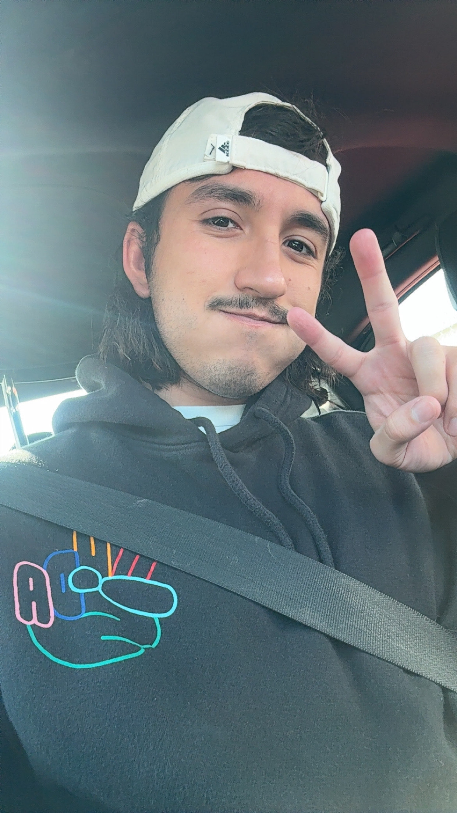
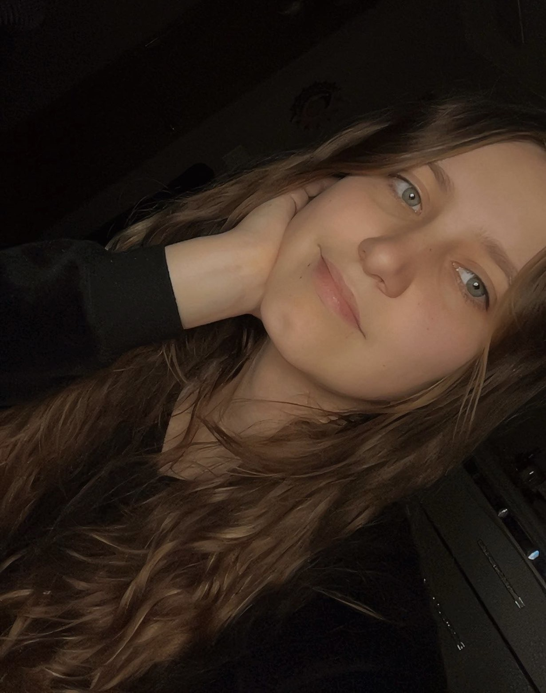
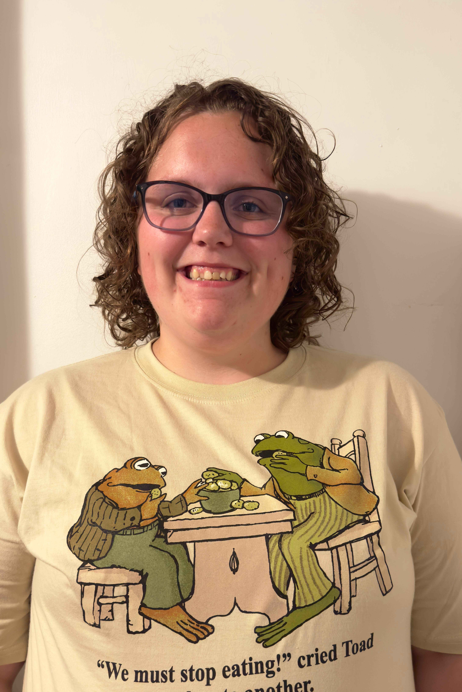

Our mission is to leverage innovative technology to improve equitable access to nutritious food across the Cedar Rapids community. We design and deploy data-driven solutions that connect individuals, food providers, and donors more efficiently—reducing waste, increasing transparency, and ensuring resources reach those who need them most. By empowering community members and organizations with accessible tools for giving and distribution, we strive to build a more resilient, informed, and food-secure future for all.

Project Lead
David was born and raised in New Mexico. He moved to Iowa in 2021 and has been an Iowanian ever since. He is currently pursuing a Bachelor's degree of Computer Science at Mount Mercy University. He plans to graduate in 2026 and work toward getting into PhD school after graduation. He was part of a Non-Profit Organization called "Camp Kesem" when he was attending New Mexico State University, where he graduated in May 2020. There he helped children whose parents were facing cancer.

Web Development
Ayriana was born and raised in Iowa all her life. She is currently pursuing a Bachelor's degree in Computer Science at Mount Mercy University and is set to graduate in May 2026. With a passion for full-stack development and a love for building things that solve real problems, she spends her time writing code and building up her technical skills by taking on new projects. Outside of school, she enjoys staying active and finding new ways to challenge herself personally and professionally.

Content & Outreach
Becky was born and raised in Eastern Iowa and has remained deeply connected to her local community. She is currently pursuing a Bachelor's degree at Mount Mercy University and plans to graduate in 2026. Alongside her academic work, she has developed a strong interest in using technology to address community needs, particularly in improving access to essential resources. Becky has been actively involved in nonprofit and community-focused efforts, including her work with the Catherine McAuley Center, where she supports initiatives that serve individuals and families in need. Through this experience, she has gained insight into the challenges many communities face around food access, stability, and support services.